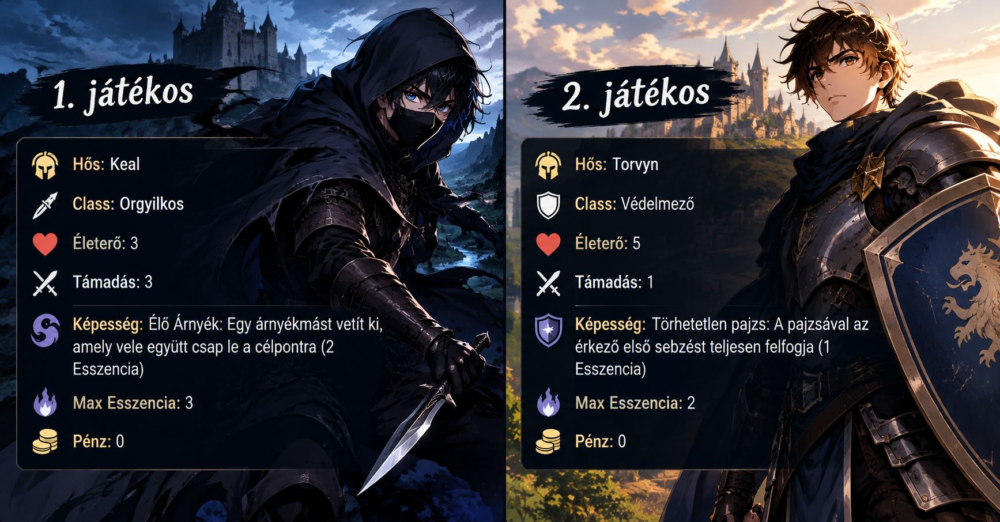

Két játékosos szimuláció
Az első kör
Nézd meg lépésről lépésre, hogyan zajlik le egy teljes kör két játékossal.

0. Pénzfeldobás
Pénzfeldobás alapján az első játékos kezdi el a viadalt.
1. Esemény
Az aktuális eseménykártya hatása életbe lép.
"Pusztító Visszhang" mindenki 1 sebzést szenved amikor képességet használ, 2 körig
2. Elrendezés
Az 1. játékos Keal-t a pályára helyezi.
A 2. játékos Torvyn-t pályára helyezi.
3. Harc
Kael támad
Kael aktiválja az Élő árnyék képességét: kivetíti árnyékmását, és ketten csapnak le egyszerre Torvynra. Összesített támadása: 6.
Torvyn Törhetetlen képessége aktiválódik, és felfogja Keal Élő árnyéka sebzését. Összesített sérülése: 3
Torvyn támad
Torvyn sebzése: 1. Összesített támadása: 1.
Kael sérul. Összesített sérülése: 1.
4. Szakasz eredménye
A harc alapján a 1. játékos nyeri a kört.
Győztes: 1. játékos
Vesztes: 2. játékos
5. Sorozat
Az 1. játékos vereségi sorozata: 1
A 2. játékos győzelmi sorozata: 1
6. Pénzjutalom
Az 1. játékos 5 pénzt kap a győzelemért.
Pénze: 0 → 5
A 2. játékos 3 pénzt kap a vereségért.
Pénze: 0 → 3
7. Kártyahúzás
Mindkét játékos 5 lapot húz.
A játékosok megnézik a kapott lapokat, majd eldöntik, hogy melyiket szeretnék megvásárolni.
1. játékos vásárlása
Rendelkezésre álló pénz: 5
Nem vásárol kártyát.
Nem megvásárolt kártyák visszamennek a pakli aljára.
Megmaradó pénz: 5
2. játékos vásárlása
Rendelkezésre álló pénz: 3
A játékos megvásárolja a Életerő kártyát.
Megmaradó pénz: 0
1. játékos
Hős:Keal
Class:Orgyilkos
Életerő: 1
Támadás: 3
Képesség: Élő Árnyék: Egy árnyékmást vetít ki, amely vele együtt csap le a célpontra (2 Esszencia)
Esszencia: 1
Pénz: 5
2. játékos
Hős: Torvyn
Class:Védelmező
Életerő: 2
Támadás: 1
Képesség: Törhetetlen pajzs: A pajzsával az érkező első sebzést teljesen felfogja (1 Esszencia)
Esszencia: 1
Pénz: 0
Az első szakasz vége
Az első szakasz befejeződött.
A következő szakasz ismét az elso ponttól kezdődik.